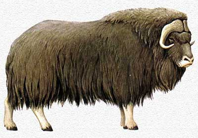
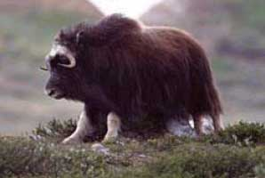

BUE MUSCHIATO (MOSKOX)

| Climate/Terrain | Pianure e colline fredde (Terre Selvagge) |
| Frequency | Uncommon |
| Organization | Gruppo |
| Activity Cycle | Day |
| Diet | Erbivoro |
| Intelligence | Animal (1) |
| Treasure | Nessuno |
| Alignment | Neutral |
| No. Appearing | 2d6+1 |
| Armor Class | 6 |
| Movement | 12, Sw. 9 |
| Hit Dice | 3 + 6 |
| Thac0 | 17 |
| No. of Attacks | 1 Cornata |
| Damage / Attacks | 1d6 |
| Special Attacks | Nessuna |
| Special Defenses | Nessuna |
| Magic Resistance | Nessuna |
| Size | Large |
| Morale | Average (9) |
| XP value | 175 |
Descrizione
Questo Bovide ha dimensioni notevoli, misura un’altezza alla spalla di 137 cm ed una lunghezza di 245 cm con un peso che può raggiungere i 340 kg. L’aspetto massiccio è dovuto anche alla forma del corpo, quindi la gibbosità all’altezza delle spalle che va poi diminuendo posteriormente; la testa, relativamente corta, su un collo tozzo; le zampe piuttosto corte. La pelliccia è piuttosto fitta sul collo, sulla testa e sulle spalle. Il colore marrone scuro del manto tende a schiarire verso le zampe. Le corna, che divengono via via più scure con l’età, sono ricurve verso il basso e poi verso l’alto.
Combat
In caso di pericolo queste creature si stringono a cerchio toccandosi con le spalle e stando pronte a colpire con le loro corna chi si avvicini. Qualora tale tattica non si dimostra efficace (ad es. perché sotto il tiro di armi da lancio se in prossimità dell'acqua il cercherà di trovare protezione nuotando. Il bue muschiato, infatti, è un ottimo nuotatore. Altrimenti se messo alle strette affronterà il nemico con le sue corna. In nessun caso il Bue Muschiato può effettuare una carica (può provare però ad aumentare il suo movimento correndo).
Habitat/Society
Il bue muschiato è un animale sociale e vive in gruppi condotti da un esemplare chiamato il “condottiero” (solitamente quello più resistente). In presenza di un ostacolo (ad esempio un fiume) costui individua la via migliore ed è seguito dagli altri animali in fila. Questa creatura vive in gruppo per difendersi dai predatori e per proteggersi dal freddo. Il bue muschiato abita in ambienti estremamente freddi, e diverse sono le strategie evolute per sopravvivere in tali condizioni, riducendo al massimo il consumo di energia: è un animale sedentario, che non ama spostarsi molto durante il giorno (1-10 km), e anche gli spostamenti stagionali sono limitati ad una cinquantina di chilometri; i movimenti sono lenti; quando il vento gelido soffia rimane seduto in avvallamenti esponendo un fianco e il dorso. Anche il suo corpo è evoluto per sopravvivere in ambienti ostili: forma massiccia e compatta, pelo lanoso ed isolante. Quando la temperatura diventa critica (- 40°C) il bue muschiato improvvisamente aumenta l’attività corporea, in modo tale da non morire assiderato.
Ecology
Il bue muschiato è diffuso nelle terre selvagge (dove scappa nelle pozze in caso di pericolo) e nelle pianure e colline del Nordor e della penisola di Irendal. La carcassa intera di bue muschiato è molto ricercata per la qualità della carna, per la pelle e per il suo pelo. I cacciatori possono venderla intera ad un valore di 8 - 10 g.p.
